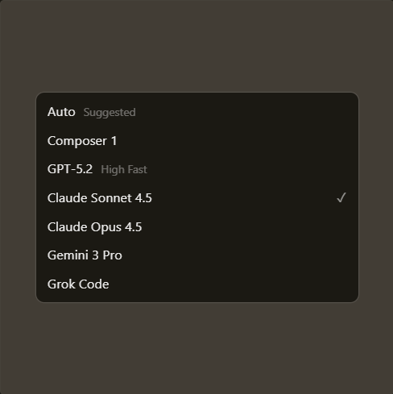
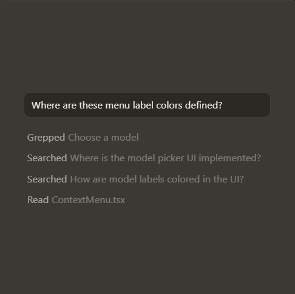

Built to make you extraordinarily productive,
Cursor is the best way to code with AI.
Trusted every day by millions of professional developers.


The new way to build software.
It was night and day from one batch to another, adoption went from single digits to over 80%. It just spread like wildfire, all the best builders were using Cursor.
General Partner, Y Combinator
The most useful AI tool that I currently pay for, hands down, is Cursor. It's fast, autocompletes when and where you need it to, handles brackets properly, sensible keyboard shortcuts, bring-your-ownbr-model... everything is well put together.
Creator of shadcn/ui
The best LLM applications have an autonomy slider: you control how much independence to give the AI. In Cursor, you can do Tab completion, Cmd+K for targeted edits, or you can let it rip with the full autonomy agentic version.
CEO, Eureka Labs
Cursor quickly grew from hundreds to thousands of extremely enthusiastic Stripe employees. We spend more on R&D and software creation than any other undertaking, and there's significant economic outcomes when making that process more efficient and productive.
Co-Founder & CEO, Stripe
It's official.
I hate vibe coding.
I love Cursor tab coding
It's wild.
@ThePrimeagen
It's definitely becoming more fun to be a programmer. It's less about digging through pages and more about what you want to happen. We are at the 1% of what's possible, and it's in interactive experiences like Cursor where models like GPT-5 shine brightest.
President, OpenAI
Stay on the frontier
Choose between every cutting-edge model from OpenAI, Anthropic, Gemini, and xAI
Explore models↗ Cursor learners how your codebase works, no matter the scale or complexity
Learn about semantic search↗ Trusted by over half of the fortune 500 to accelerate development, security and ar scale
Explore Enterprise→Changelog
Subagents, Skills, and Image
Generation
CLI Agent Modes and Cloud Handoff
New CLI Features and Improved CLI Performance
Layout Customization and Stability Improvements
Cursor is an applied team focused
on building the future of coding.

A new interface and our first coding model, both purpose-built for working
with agents.
Product · Oct 29, 2025
Our new tab model makes 21% fewer suggestions while having 28% higher
accept rate
Research · Sep 12, 2025
Achieving a 3.5x MoE layer speedup with a complete rebuild for Blackwell GPUs
Research · Aug 29, 2025
Try Cursor Now